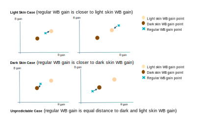
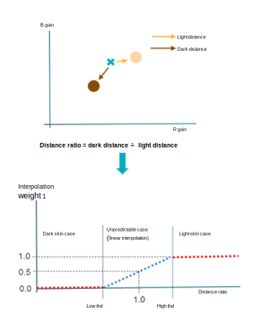
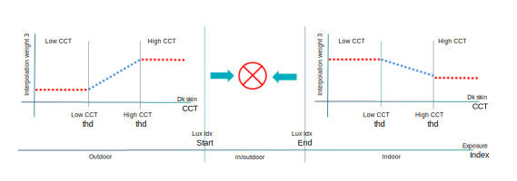
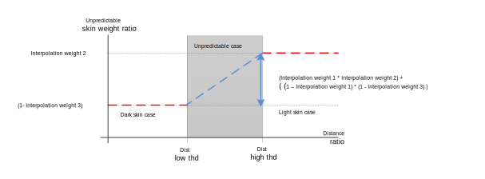

The FA SA module computes the final face WB gain using three skin type
interpolation weight factors that aim to avoid misleading skin targets.
To determine the final face WB gain, the
Skin Type Interpolation
Weight submodule does the following:
- Computes the distance ratio between light skin WB gain and dark
skin WB gain, as detailed in Example of computing
Interpolation Weight 1, to determine if the situation is a light
skin, dark skin, or unpredictable case.
- Based on the results of Step 1, assesses the skin CCT and lux index of the
face stats to adjust for possible misleading skin targets.
- For the light skin case, perform the assessment as
detailed in Example of computing Interpolation
Weight 2
- For the dark skin case, perform the assessment as
detailed in Example of computing Interpolation
Weight 3
- For the unpredictable case, perform the assessment as
detailed in Example of computing interpolation
weight for unpredictable case.
- Uses the result of Step 2 to weight the face WB gain to get the final face
WB gain.
Example of computing Interpolation Weight 1 (light skin distance
factor)
The Skin Type Interpolation Weight submodule compares the distance of
light skin WB gain and regular WB gain, with the distance of dark skin WB gain and
regular WB gain. Because the slope and distance between light skin and dark skin WB
gain are fixed, three cases can be distinguished as illustrated in the following
figure:

The Skin Type Interpolation Weight submodule computes the Interpolation Weight
1 parameter (light skin distance factor) as follows:
- Computes distance ratio = dark distance/light distance. Dark distance is the
distance between dark WB gain and regular WB gain. Light distance is the
distance between light WB gain and regular WB gain.
- (Light skin case) If the distance ratio is greater than the user-defined
distance high threshold, it means the light skin WB gain is closer to the
regular WB gain, so the Interpolation Weight 1 is set to 1.
- (Dark skin case) If the distance ratio is less than the user-defined
distance low threshold, it means the dark skin WB gain is closer to the regular
WB gain, so the Interpolation Weight 1 is set to 0.
- (Unpredictable case) If the distance ratio is between the low and high
thresholds, then the Interpolation Weight 1 is computed by linear
interpolation.

Example of computing Interpolation Weight 2 (light skin weighted
ratio)
The Interpolation Weight 2 parameter is applicable to the light skin case
(distance ratio > distance high threshold). Sometimes the regular WB gain becomes
bluish due to misleading color zones. Although the dark skin target is the correct
choice, the light skin target may be chosen because of the misleading stats. To
avoid this situation, the Skin Type Interpolation Weight submodule evaluates the lux
index and light skin CCT to compute the value of Interpolation Weight 2.
- The user defines the low and high light skin CCT thresholds.
- In outdoor condition, give much lower light skin weighted ratio
(interpolation weight 2) if light skin CCT is low
- In indoor condition, give a little bit lower light skin weighted
ratio (interpolation weight 2) if light skin CCT is high
- If lux index is between outdoor and indoor, use linear
interpolation to compute light skin weighted ratio (interpolation weight 2)
Example of computing Interpolation Weight 3 (dark skin weighted
ratio)
The Interpolation Weight 3 parameter is applicable to the dark skin case
(distance ratio < distance low threshold). Sometimes the regular WB gain becomes
yellowish due to misleading color zones. Although the light skin target is the
correct choice, the dark skin target may be chosen because of the misleading stats.
To avoid this situation, the Skin Type Interpolation Weight submodule evaluates the
lux index and dark skin CCT to compute the value of Interpolation Weight 3.

- The user defines the low and high dark skin CCT thresholds.
- In outdoor condition, give much higher dark skin weighted ratio
(interpolation weight 3) if dark skin CCT is high
- In indoor condition, give much lower dark skin weighted ratio
(interpolation weight 3) if dark skin CCT is high
- If lux index is between outdoor and indoor, use linear interpolation to compute
dark skin weighted ratio (interpolation weight 3)
Example of computing interpolation weight for unpredictable case
In the unpredictable case (distance low threshold < distance ratio <
distance high threshold), the skin weighted ratio is determined by interpolating
Interpolation Weight 2 (light skin weight ratio) and Interpolation weight 3 (dark
skin weight ratio) by using Interpolation Weight 1 (distance weight ratio). The
following image illustrates the unpredictable case computation.
